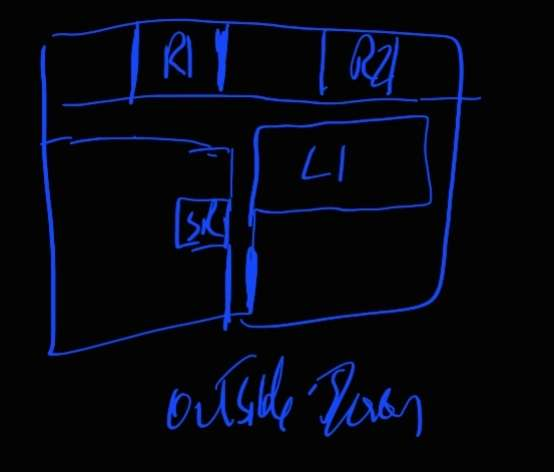
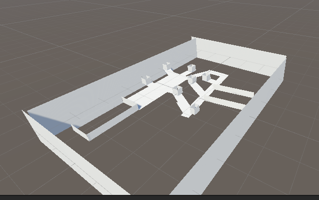
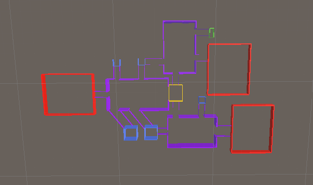
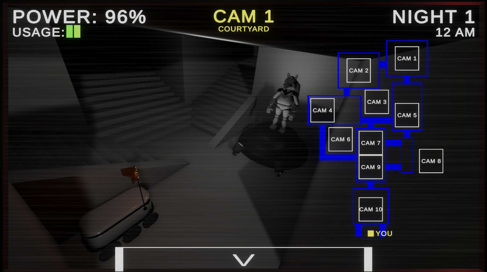

Five Nights At Peter's
Can you survive the night?

Role: Level Designer
Game Type: Quarter Game
This game was one of the games I had the most fun in. Making the map layout and designing the enemies for horror games was an experience that helped shape my design experience. We made this game based on the popular franchise 5 Nights at Freddy’s but we added our school's mascot as the main animatronic. Alongside this, we added the zot bots, a set of robots that deliver food to students across our campus. I also helped fill out the map and designed some of the shelves and furniture on the map.Initially I started out with a paper prototype of the map.

I went through 2 iterations with my team lead and the other designer and then we started to design the shape of the map.

After settling on a shape of the map and the hallways. I started to block out the map.

Since we decided on the layout of the map. My team lead took it, simplified it and started placing the cameras. Since this is a five nights at freddy's game camera placement was important, so I helped him fine tune the camera placements. After which we started filling the map with assets.

Working with 3d modelers and programmers to make this game was a blast and I learned a lot about map design and encounter designs.